SSAM Notebook: BaristaSeq data SSAM analysis¶
[1]:
import pandas as pd
import ssam
import matplotlib.pyplot as plt
import numpy as np
import seaborn as sns
[2]:
plt.rcParams["font.family"] = "Arial"
[3]:
cell_class_colors = {
"Lamp5": "#DA808C",
"Sncg": "#8510C0",
"Serpinf1": "#8510C0",
"Vip": "#70559A",
"Sst": "#F15A29",
"Pvalb": "#D93137",
"L2/3 IT": "#94D9A1",
"L4": "#00979D",
"L5 IT": "#008A61",
"L6 IT": "#A19922",
"L5 PT": "#0D5B78",
"L5 NP": "#3E9E64",
"L6 CT": "#69A8E6",
"L6 PT": "#69A8E6",
"L6b": "#266180",
"Meis2": "#FF0000",
"CR": "#00FF66",
"Astro": "#665C47",
"Oligo": "#53776C",
"VLMC": "#697255",
"Peri": "#665547",
"SMC": "#807059",
"Endo": "#8D6C62",
"Macrophage": "#537358",
}
[6]:
bad_genes = ['Vxn', 'unused-1', 'unused-2', 'Plpp4', 'Lratd2']
[7]:
spots = pd.read_csv("data/raw/BaristaSeq_all_spots_2_with_annotation.csv")
[8]:
seg_df = pd.read_csv("data/baysor/barista_seq/segmentation.csv")
spots['cell'] = seg_df['cell'].to_numpy()
[9]:
plt.figure(figsize=[15, 15])
plt.scatter(spots.x, spots.y, s=1)
[9]:
<matplotlib.collections.PathCollection at 0x7f405cf84f70>
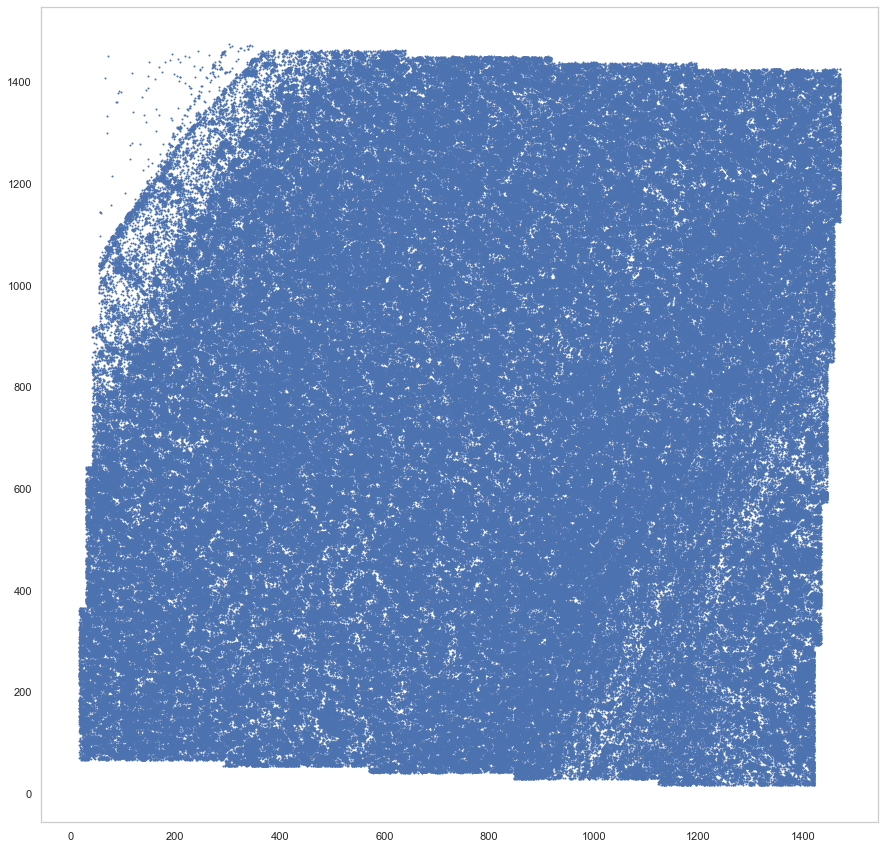
[10]:
spots = spots[spots.layer != "outside_VISp"]
for bad_gene in bad_genes:
spots = spots[spots.gene != bad_gene]
[11]:
beta = -1.04750901228598
rotm = np.array([[np.cos(beta), np.sin(beta)], [-np.sin(beta), np.cos(beta)]])
pos_um = np.array([spots.x, spots.y])
rot_um = np.dot(pos_um.T, rotm)
rot_um[:, 0] -= np.min(rot_um[:, 0])
rot_um[:, 1] -= np.min(rot_um[:, 1])
[9]:
plt.figure(figsize=[15, 15])
plt.scatter(*rot_um.T, s=1)
plt.xlim([0, 850])
plt.ylim([0, 1350])
[9]:
(0.0, 1350.0)
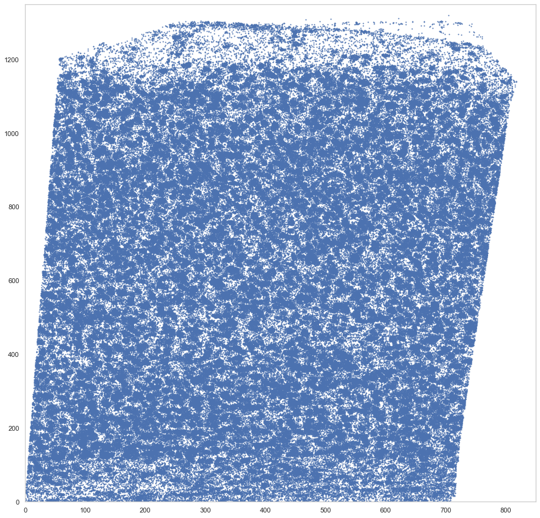
[12]:
locations = spots[["gene", "x", "y", "cell"]].set_index('gene')
locations['x'] = rot_um[:, 0]
locations['y'] = rot_um[:, 1]
[13]:
locations
[13]:
| x | y | cell | |
|---|---|---|---|
| gene | |||
| Nrgn | 688.726337 | 277.111239 | 8444 |
| Atp1a3 | 706.602582 | 287.424672 | 8445 |
| Nrgn | 730.389647 | 301.148264 | 8495 |
| Adarb2 | 631.238166 | 243.759579 | 8409 |
| Sparcl1 | 633.208728 | 244.896465 | 8409 |
| ... | ... | ... | ... |
| Gm11549 | 83.127330 | 902.181293 | 1577 |
| Atp1a3 | 142.666020 | 936.531250 | 0 |
| Atp1a3 | 49.789322 | 882.572217 | 1655 |
| Gad1 | 122.137098 | 924.312185 | 1657 |
| Deptor | 52.263648 | 878.933827 | 1655 |
403335 rows × 3 columns
[4]:
import ssam
[5]:
ds = ssam.SSAMDataset("ssam_data/baristaseq")
analysis = ssam.SSAMAnalysis(ds, ncores=10, verbose=True)
[86]:
analysis.run_kde(locations=locations, width=850, height=1350, bandwidth=5, re_run=True)
Running KDE for gene Adarb2...
Saving KDE for gene Adarb2...
Running KDE for gene Adcy2...
Saving KDE for gene Adcy2...
Running KDE for gene Ank1...
Saving KDE for gene Ank1...
Running KDE for gene Ankrd55...
Saving KDE for gene Ankrd55...
Running KDE for gene Arpp19...
Saving KDE for gene Arpp19...
Running KDE for gene Arx...
Saving KDE for gene Arx...
Running KDE for gene Atp1a3...
Saving KDE for gene Atp1a3...
Running KDE for gene Brinp3...
Saving KDE for gene Brinp3...
Running KDE for gene Btbd11...
Saving KDE for gene Btbd11...
Running KDE for gene Cacna2d3...
Saving KDE for gene Cacna2d3...
Running KDE for gene Calb1...
Saving KDE for gene Calb1...
Running KDE for gene Caln1...
Saving KDE for gene Caln1...
Running KDE for gene Car3...
Saving KDE for gene Car3...
Running KDE for gene Car4...
Saving KDE for gene Car4...
Running KDE for gene Cck...
Saving KDE for gene Cck...
Running KDE for gene Chodl...
Saving KDE for gene Chodl...
Running KDE for gene Chrna2...
Saving KDE for gene Chrna2...
Running KDE for gene Cnr1...
Saving KDE for gene Cnr1...
Running KDE for gene Crh...
Saving KDE for gene Crh...
Running KDE for gene Cryab...
Saving KDE for gene Cryab...
Running KDE for gene Ctxn1...
Saving KDE for gene Ctxn1...
Running KDE for gene Cxcl14...
Saving KDE for gene Cxcl14...
Running KDE for gene Dcn...
Saving KDE for gene Dcn...
Running KDE for gene Deptor...
Saving KDE for gene Deptor...
Running KDE for gene Dlx1...
Saving KDE for gene Dlx1...
Running KDE for gene Dlx6...
Saving KDE for gene Dlx6...
Running KDE for gene Fa2h...
Saving KDE for gene Fa2h...
Running KDE for gene Fezf2...
Saving KDE for gene Fezf2...
Running KDE for gene Fgfr3...
Saving KDE for gene Fgfr3...
Running KDE for gene Gad1...
Saving KDE for gene Gad1...
Running KDE for gene Gad2...
Saving KDE for gene Gad2...
Running KDE for gene Gm11549...
Saving KDE for gene Gm11549...
Running KDE for gene Id2...
Saving KDE for gene Id2...
Running KDE for gene Igfbp6...
Saving KDE for gene Igfbp6...
Running KDE for gene Itpka...
Saving KDE for gene Itpka...
Running KDE for gene Kcnip1...
Saving KDE for gene Kcnip1...
Running KDE for gene Kcnip4...
Saving KDE for gene Kcnip4...
Running KDE for gene Kcnmb2...
Saving KDE for gene Kcnmb2...
Running KDE for gene Lamp5...
Saving KDE for gene Lamp5...
Running KDE for gene Lhx6...
Saving KDE for gene Lhx6...
Running KDE for gene Ly6c2...
Saving KDE for gene Ly6c2...
Running KDE for gene Ly86...
Saving KDE for gene Ly86...
Running KDE for gene Map3k7cl...
Saving KDE for gene Map3k7cl...
Running KDE for gene Ndnf...
Saving KDE for gene Ndnf...
Running KDE for gene Neurod1...
Saving KDE for gene Neurod1...
Running KDE for gene Neurod6...
Saving KDE for gene Neurod6...
Running KDE for gene Nfib...
Saving KDE for gene Nfib...
Running KDE for gene Npy...
Saving KDE for gene Npy...
Running KDE for gene Nrgn...
Saving KDE for gene Nrgn...
Running KDE for gene Nrn1...
Saving KDE for gene Nrn1...
Running KDE for gene Nxph1...
Saving KDE for gene Nxph1...
Running KDE for gene Nxph4...
Saving KDE for gene Nxph4...
Running KDE for gene Pcp4...
Saving KDE for gene Pcp4...
Running KDE for gene Pdgfra...
Saving KDE for gene Pdgfra...
Running KDE for gene Penk...
Saving KDE for gene Penk...
Running KDE for gene Ptn...
Saving KDE for gene Ptn...
Running KDE for gene Ptprd...
Saving KDE for gene Ptprd...
Running KDE for gene Pvalb...
Saving KDE for gene Pvalb...
Running KDE for gene Rab3b...
Saving KDE for gene Rab3b...
Running KDE for gene Reln...
Saving KDE for gene Reln...
Running KDE for gene Rorb...
Saving KDE for gene Rorb...
Running KDE for gene Rprml...
Saving KDE for gene Rprml...
Running KDE for gene Rspo1...
Saving KDE for gene Rspo1...
Running KDE for gene Slc17a7...
Saving KDE for gene Slc17a7...
Running KDE for gene Slc17a8...
Saving KDE for gene Slc17a8...
Running KDE for gene Slc32a1...
Saving KDE for gene Slc32a1...
Running KDE for gene Slc6a1...
Saving KDE for gene Slc6a1...
Running KDE for gene Sncg...
Saving KDE for gene Sncg...
Running KDE for gene Sparcl1...
Saving KDE for gene Sparcl1...
Running KDE for gene Sst...
Saving KDE for gene Sst...
Running KDE for gene Sv2b...
Saving KDE for gene Sv2b...
Running KDE for gene Synpr...
Saving KDE for gene Synpr...
Running KDE for gene Syt6...
Saving KDE for gene Syt6...
Running KDE for gene Tesc...
Saving KDE for gene Tesc...
Running KDE for gene Th...
Saving KDE for gene Th...
Running KDE for gene Vip...
Saving KDE for gene Vip...
[6]:
analysis.load_kde()
[15]:
plt.figure(figsize=[15, 15])
ds.plot_l1norm(rotate=3)
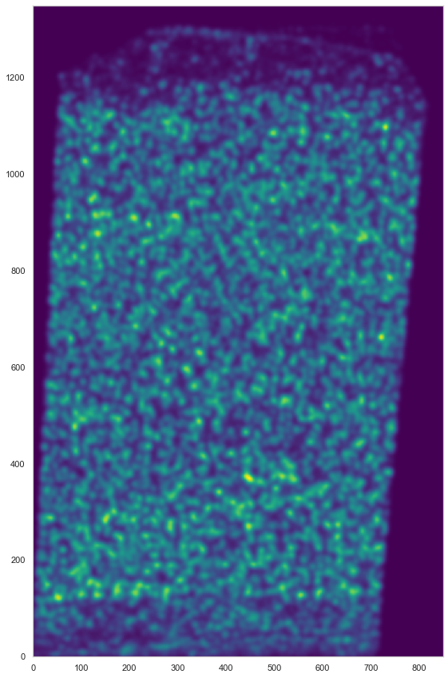
[16]:
analysis.find_localmax()
Found 1301 local max vectors.
[17]:
plt.figure(figsize=[15, 15])
ds.plot_l1norm(rotate=3, cmap="Greys")
ds.plot_localmax(rotate=3)

[18]:
analysis.normalize_vectors(re_run=True)
Normalizing...
Processing chunk 1 (of 2)...
Processing chunk 2 (of 2)...
[7]:
cell_by_gene = pd.read_csv("data/jeremy_filtered/BARISTAseq_filtered_cellxgene.csv")
cell_by_gene = cell_by_gene.set_index('gene_name').T[ds.genes]
[8]:
from sklearn import preprocessing
#cell_by_gene_normalized = ssam.run_sctransform(cell_by_gene.reset_index(drop=True), plot_model_pars=True)[0]
cell_by_gene_normalized = np.log(preprocessing.normalize(cell_by_gene, norm="l1", axis=1) * 10 + 1)
cell_by_gene_normalized_scaled = preprocessing.scale(cell_by_gene_normalized)
[9]:
from collections import defaultdict
from itertools import chain
def sort_genes(centroids, tbl, genes, min_exp=0.5):
sorted_genes = defaultdict(lambda: [])
sorted_cnt = 0
while sorted_cnt < len(genes):
for cidx, mean_cl in enumerate(centroids):
for gidx in np.argsort(mean_cl)[::-1]:
if all([not genes[gidx] in l for l in sorted_genes.values()]):
if mean_cl[gidx] < min_exp:
sorted_genes["rem"].append(genes[gidx])
else:
sorted_genes[cidx].append(genes[gidx])
sorted_cnt += 1
break
sorted_genes = list(chain(*[sorted_genes[i] for i in range(len(centroids))])) + sorted_genes["rem"]
sorted_gidx = [list(genes).index(g) for g in sorted_genes]
return tbl[:, sorted_gidx], sorted_genes
[10]:
def plot_heatmap(sorted_cbg, sorted_genes, calls, uniq_calls, cols, figsize):
from sklearn import preprocessing
from mpl_toolkits.axes_grid1 import Divider, Size
from matplotlib import patches
rects = []
sorted_cbg2 = np.zeros_like(sorted_cbg)
curpos = 0
for idx, (cell_type, col) in enumerate(zip(uniq_calls, cols)):
cl_vecs = sorted_cbg[calls.subclass == cell_type]
sorted_cbg2[curpos:curpos+len(cl_vecs)] = cl_vecs
rects.append(patches.Rectangle((curpos, 0), curpos+len(cl_vecs), 1, linewidth=0, facecolor=col))
curpos += len(cl_vecs)
fig = plt.figure(figsize=figsize)
#fig, axes = plt.subplots(2, 1, figsize=[20, 10], sharex=True)
h = [Size.Fixed(1.0), Size.Scaled(1.0)]
v = [Size.Fixed(0), Size.Scaled(1.0), Size.Fixed(0.05), Size.Fixed(0.3)]
divider = Divider(fig, (0, 0, 1, 1), h, v, aspect=False)
ax_heatmap = fig.add_axes(divider.get_position(), axes_locator=divider.new_locator(nx=1, ny=1))
ax_ctbar = fig.add_axes(divider.get_position(), axes_locator=divider.new_locator(nx=1, ny=3), sharex=ax_heatmap)
for rect in rects:
ax_ctbar.add_patch(rect)
ax_ctbar.axes.xaxis.set_visible(False)
ax_ctbar.axes.yaxis.set_visible(False)
for sp in ax_ctbar.spines.values():
sp.set_linewidth(0.5)
sp.set_color('k')
sns.heatmap(sorted_cbg2.T[::-1, :], vmin=-2.5, vmax=2.5, cmap='bwr', yticklabels=sorted_genes[::-1],
cbar=None, ax=ax_heatmap)
ax_heatmap.axes.xaxis.set_visible(False)
for tick in ax_heatmap.get_yticklabels():
tick.set_fontname("Arial")
for sp in ax_heatmap.spines.values():
sp.set_linewidth(0.5)
sp.set_color('k')
sp.set_visible(True)
plt.yticks(rotation=0)
#ax_hist = fig.add_axes([1.02, 0.74, 0.08, 0.1])
#ax_hist.hist(np.ravel(sorted_cbg2), bins=100, histtype='step', lw=3, color='lime')
#ax_hist.set_xlim([-2.5, 2.5])
#ax_hist.axes.xaxis.set_ticks([-2.5, 0, 2.5])
#ax_hist.axes.yaxis.set_visible(False)
return fig
[11]:
calls_nwcs = pd.read_csv("consensus_calls/renee/BARISTAseq_filtered_combined_mapping_neg_weight_subclass.csv")
[12]:
uniq_celltypes_nwcs = [cl for cl in cell_class_colors.keys() if cl in calls_nwcs.subclass.unique()]
centroids_nwcs = []
for cell_type in uniq_celltypes_nwcs:
centroids_nwcs.append(np.mean(cell_by_gene_normalized[calls_nwcs.subclass == cell_type], axis=0))
[13]:
centroids_scaled_nwcs = []
for cell_type in uniq_celltypes_nwcs:
centroids_scaled_nwcs.append(np.mean(cell_by_gene_normalized_scaled[calls_nwcs.subclass == cell_type], axis=0))
sorted_cbg, sorted_genes = sort_genes(centroids_scaled_nwcs, cell_by_gene_normalized_scaled, ds.genes)
[14]:
cols = [cell_class_colors[ct] for ct in uniq_celltypes_nwcs]
plot_heatmap(sorted_cbg[:, ::-1], sorted_genes[::-1], calls_nwcs, uniq_celltypes_nwcs, cols, [20, 17]).savefig("baristaseq_heatmap_nwcs.pdf")
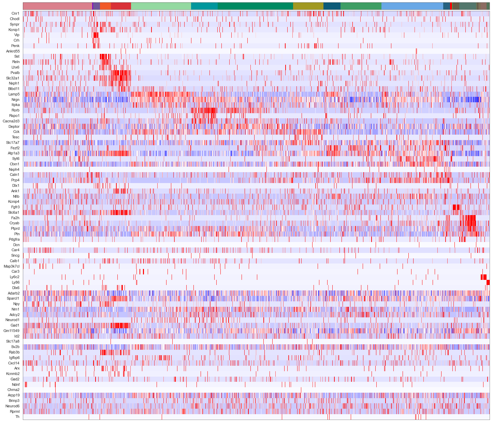
[77]:
from sklearn import preprocessing
fig, axes = plt.subplots(len(uniq_celltypes_nwcs), 1, figsize=[20, len(uniq_celltypes_nwcs)*2])
plt.subplots_adjust(hspace=0)
for idx, cell_type in enumerate(uniq_celltypes_nwcs):
cl_vecs = cell_by_gene_normalized_scaled[calls_nwcs.subclass == cell_type]
sns.violinplot(ax=axes[idx], data=cl_vecs, width=1)
axes[idx].set_ylabel(cell_type)
axes[idx].set_yticks([])
axes[idx].set_xticklabels(ds.genes, rotation=90)
pass
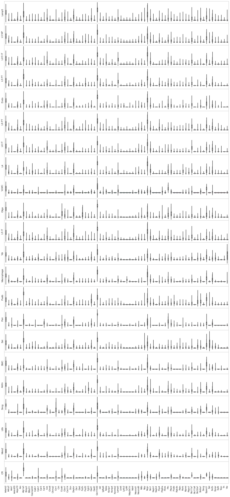
[ ]:
taxon_orders = [
"Lamp5",
"Sncg",
"Serpinf1",
"Vip",
"Sst",
"Pvalb",
"L2/3 IT",
"L4",
"L5 IT",
"L6 IT",
#"NP",
"L5 NP", # ?
"L5 PT", # ?
"L6 CT",
"L6 PT", # ?
"L6b",
"Meis2",
"CR",
"Astro",
"Oligo",
"VLMC",
"Peri",
"SMC",
"Endo",
"Macrophage"
]
indices = [taxon_orders.index(ct) for ct in uniq_celltypes_nwcs]
fig, axes = plt.subplots(len(indices), 1, figsize=[20, len(indices)*2])
plt.subplots_adjust(hspace=0)
for idx in range(len(indices)):
acc_idx = np.sum(acc_lens[:idx]).astype(int)
cl_vecs = gene_exp_heatmap.T[acc_idx:acc_idx+acc_lens[idx]]
sns.violinplot(ax=axes[idx], data=cl_vecs, width=1)
axes[idx].set_ylabel(ylabels[idx])
axes[idx].set_yticks([])
axes[idx].set_xticklabels(heatmap_genes_ordered, rotation=90)
pass
[23]:
analysis.map_celltypes(centroids_nwcs)
Generating cell-type map for centroid #0...
Processing chunk (0/1)...
Generating cell-type map for centroid #1...
Processing chunk (0/1)...
Generating cell-type map for centroid #2...
Processing chunk (0/1)...
Generating cell-type map for centroid #3...
Processing chunk (0/1)...
Generating cell-type map for centroid #4...
Processing chunk (0/1)...
Generating cell-type map for centroid #5...
Processing chunk (0/1)...
Generating cell-type map for centroid #6...
Processing chunk (0/1)...
Generating cell-type map for centroid #7...
Processing chunk (0/1)...
Generating cell-type map for centroid #8...
Processing chunk (0/1)...
Generating cell-type map for centroid #9...
Processing chunk (0/1)...
Generating cell-type map for centroid #10...
Processing chunk (0/1)...
Generating cell-type map for centroid #11...
Processing chunk (0/1)...
Generating cell-type map for centroid #12...
Processing chunk (0/1)...
Generating cell-type map for centroid #13...
Processing chunk (0/1)...
Generating cell-type map for centroid #14...
Processing chunk (0/1)...
Generating cell-type map for centroid #15...
Processing chunk (0/1)...
Generating cell-type map for centroid #16...
Processing chunk (0/1)...
Generating cell-type map for centroid #17...
Processing chunk (0/1)...
Generating cell-type map for centroid #18...
Processing chunk (0/1)...
Generating cell-type map for centroid #19...
Processing chunk (0/1)...
Generating cell-type map for centroid #20...
Processing chunk (0/1)...
Generating cell-type map for centroid #21...
Processing chunk (0/1)...
[24]:
analysis.filter_celltypemaps(min_norm=0.4, min_r=0.6)
[25]:
map_colors_nwcs = [cell_class_colors[ct] for ct in uniq_celltypes_nwcs]
[26]:
plt.figure(figsize=[20, 20])
ds.plot_celltypes_map(rotate=3, colors=map_colors_nwcs)
plt.title("BaristaSeq - NWCS (SSAM)")
[26]:
Text(0.5, 1.0, 'BaristaSeq - NWCS (SSAM)')
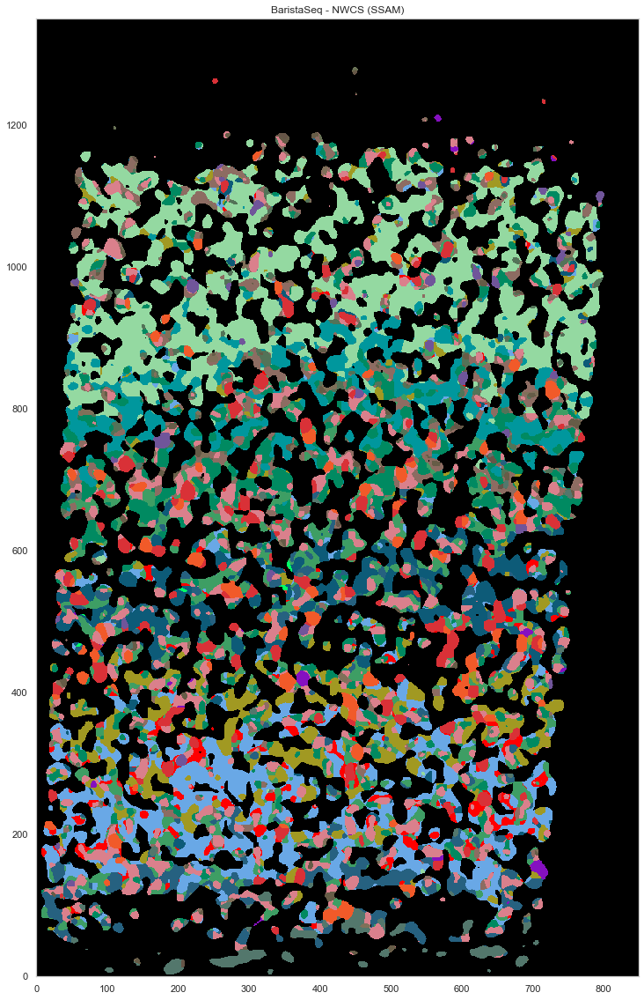
[30]:
ds.centroids = centroids_nwcs # TODO: this should not be necessary!
[31]:
analysis.bin_celltypemaps(step=10, radius=100)
[42]:
analysis.find_domains(n_clusters=20, merge_remote=False, merge_thres=0.8, norm_thres=4000)
[44]:
plt.figure(figsize=[15, 15])
ds.plot_domains(rotate=3, cmap='rainbow', z=0)
plt.axis('off')
plt.tight_layout()
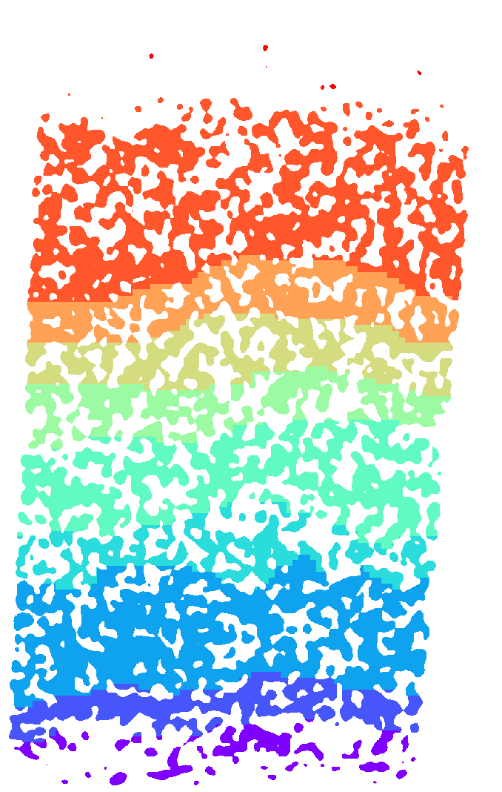
[55]:
layer_annotations = ds.inferred_domains[ds.local_maxs]
[15]:
calls_gmcs = pd.read_csv("consensus_calls/charles/barista_jeremy_pciseq_renee_eeshit_gabriele_consensus_df.csv")
[16]:
for cl in calls_gmcs.subclass.unique():
if cl == "L23_IT":
calls_gmcs.subclass.loc[calls_gmcs.subclass == "L23_IT"] = "L2/3 IT"
elif "_" in cl:
calls_gmcs.subclass.loc[calls_gmcs.subclass == cl] = cl.replace("_", " ")
/tmp/ipykernel_590/1845947111.py:5: SettingWithCopyWarning:
A value is trying to be set on a copy of a slice from a DataFrame
See the caveats in the documentation: https://pandas.pydata.org/pandas-docs/stable/user_guide/indexing.html#returning-a-view-versus-a-copy
calls_gmcs.subclass.loc[calls_gmcs.subclass == cl] = cl.replace("_", " ")
/tmp/ipykernel_590/1845947111.py:3: SettingWithCopyWarning:
A value is trying to be set on a copy of a slice from a DataFrame
See the caveats in the documentation: https://pandas.pydata.org/pandas-docs/stable/user_guide/indexing.html#returning-a-view-versus-a-copy
calls_gmcs.subclass.loc[calls_gmcs.subclass == "L23_IT"] = "L2/3 IT"
[17]:
uniq_celltypes_gmcs = [cl for cl in cell_class_colors.keys() if cl in calls_gmcs.subclass.unique()]
centroids_gmcs = []
for cell_type in uniq_celltypes_gmcs:
centroids_gmcs.append(np.mean(cell_by_gene_normalized[calls_gmcs.subclass == cell_type], axis=0))
[18]:
centroids_scaled_gmcs = []
for cell_type in uniq_celltypes_gmcs:
centroids_scaled_gmcs.append(np.mean(cell_by_gene_normalized_scaled[calls_gmcs.subclass == cell_type], axis=0))
sorted_cbg, sorted_genes = sort_genes(centroids_scaled_gmcs, cell_by_gene_normalized_scaled, ds.genes)
[19]:
cols = [cell_class_colors[ct] for ct in uniq_celltypes_gmcs]
plot_heatmap(sorted_cbg[:, ::-1], sorted_genes[::-1], calls_gmcs, uniq_celltypes_gmcs, cols, [20, 17]).savefig("baristaseq_heatmap_gmcs.pdf")
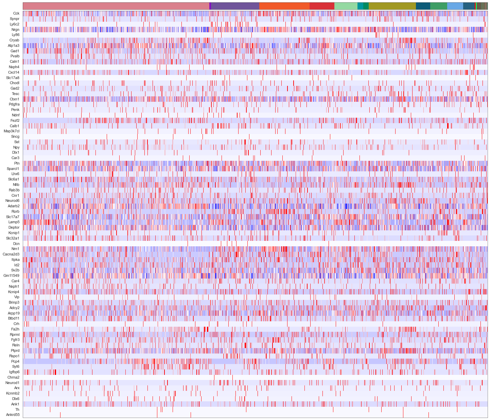
[88]:
from sklearn import preprocessing
fig, axes = plt.subplots(len(uniq_celltypes_gmcs), 1, figsize=[20, len(uniq_celltypes_gmcs)*2])
plt.subplots_adjust(hspace=0)
for idx, cell_type in enumerate(uniq_celltypes_gmcs):
cl_vecs = cell_by_gene_normalized_scaled[calls_gmcs.subclass == cell_type]
if len(cl_vecs) == 1:
cl_vecs = np.array([cl_vecs[0], cl_vecs[0]])
sns.violinplot(ax=axes[idx], data=cl_vecs, width=1)
axes[idx].set_ylabel(cell_type)
axes[idx].set_yticks([])
axes[idx].set_xticklabels(ds.genes, rotation=90)
pass
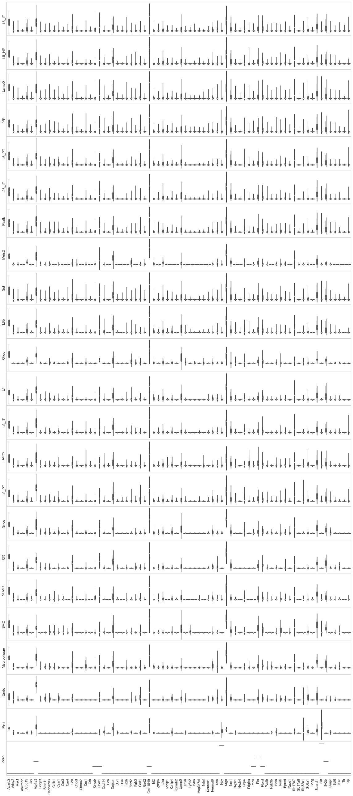
[59]:
analysis.map_celltypes(centroids_gmcs)
Generating cell-type map for centroid #0...
Processing chunk (0/1)...
Generating cell-type map for centroid #1...
Processing chunk (0/1)...
Generating cell-type map for centroid #2...
Processing chunk (0/1)...
Generating cell-type map for centroid #3...
Processing chunk (0/1)...
Generating cell-type map for centroid #4...
Processing chunk (0/1)...
Generating cell-type map for centroid #5...
Processing chunk (0/1)...
Generating cell-type map for centroid #6...
Processing chunk (0/1)...
Generating cell-type map for centroid #7...
Processing chunk (0/1)...
Generating cell-type map for centroid #8...
Processing chunk (0/1)...
Generating cell-type map for centroid #9...
Processing chunk (0/1)...
Generating cell-type map for centroid #10...
Processing chunk (0/1)...
Generating cell-type map for centroid #11...
Processing chunk (0/1)...
Generating cell-type map for centroid #12...
Processing chunk (0/1)...
Generating cell-type map for centroid #13...
Processing chunk (0/1)...
Generating cell-type map for centroid #14...
Processing chunk (0/1)...
Generating cell-type map for centroid #15...
Processing chunk (0/1)...
Generating cell-type map for centroid #16...
Processing chunk (0/1)...
Generating cell-type map for centroid #17...
Processing chunk (0/1)...
Generating cell-type map for centroid #18...
Processing chunk (0/1)...
Generating cell-type map for centroid #19...
Processing chunk (0/1)...
Generating cell-type map for centroid #20...
Processing chunk (0/1)...
Generating cell-type map for centroid #21...
Processing chunk (0/1)...
Generating cell-type map for centroid #22...
Processing chunk (0/1)...
[60]:
analysis.filter_celltypemaps(min_norm=0.4, min_r=0.6)
[61]:
map_colors_gmcs = [cell_class_colors[ct.replace("_", " ").replace("L23", "L2/3")] for ct in uniq_celltypes_gmcs]
[62]:
plt.figure(figsize=[20, 20])
ds.plot_celltypes_map(rotate=3, colors=map_colors_gmcs)
plt.title("BaristaSeq - GMCS (SSAM)")
[62]:
Text(0.5, 1.0, 'BaristaSeq - GMCS (SSAM)')
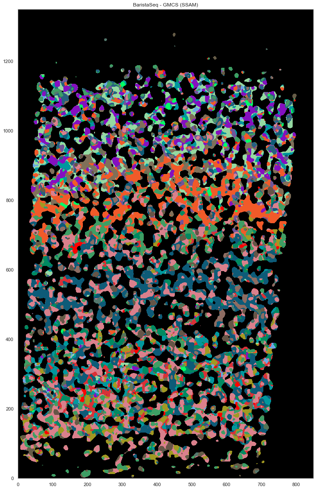
[64]:
closest_nwcs_clusters = []
closest_nwcs_clusters_r = []
closest_gmcs_clusters = []
closest_gmcs_clusters_r = []
for v in ds.normalized_vectors:
corrs = [ssam.utils.corr(v, centroids_nwcs[i]) for i in range(len(centroids_nwcs))]
idx = np.argmax(corrs)
closest_nwcs_clusters.append(uniq_celltypes_nwcs[idx])
closest_nwcs_clusters_r.append(corrs[idx])
corrs = [ssam.utils.corr(v, centroids_gmcs[i]) for i in range(len(centroids_gmcs))]
idx = np.argmax(corrs)
closest_gmcs_clusters.append(uniq_celltypes_gmcs[idx])
closest_gmcs_clusters_r.append(corrs[idx])
df = pd.DataFrame(ds.normalized_vectors, columns=ds.genes)
df.to_csv("baristaseq_ssam_localmax_expression.csv")
df = pd.DataFrame()
df['x'] = ds.local_maxs[0]
df['y'] = ds.local_maxs[1]
df['closest_consensus_nwcs_cluster'] = closest_nwcs_clusters
df['closest_consensus_nwcs_cluster_r'] = closest_nwcs_clusters_r
df['closest_consensus_gmcs_cluster'] = closest_gmcs_clusters
df['closest_consensus_gmcs_cluster_r'] = closest_gmcs_clusters_r
df['layer_annotations_nwcs'] = layer_annotations
df.to_csv("baristaseq_ssam_localmax_metadata_with_layer.csv")
[83]:
from scipy.spatial import ConvexHull
plt.figure(figsize=[20, 20])
plt.gca().set_facecolor('black')
good_ids = cell_by_gene.index.astype(int)
i = 0
for cid, sdf in locations.groupby("cell"):
if cid in good_ids:
points = sdf.iloc[:, :2].to_numpy()
hull = ConvexHull(points)
plt.fill(points[hull.vertices, 0], points[hull.vertices, 1], cell_class_colors[calls_nwcs.subclass[i]], edgecolor="black", linewidth=0.5)
i += 1
plt.xlim([0, ds.shape[0]])
plt.ylim([0, ds.shape[1]])
plt.gca().set_aspect('equal', adjustable='box')
plt.title("BaristaSeq - NWCS")
[83]:
Text(0.5, 1.0, 'BaristaSeq - NWCS')
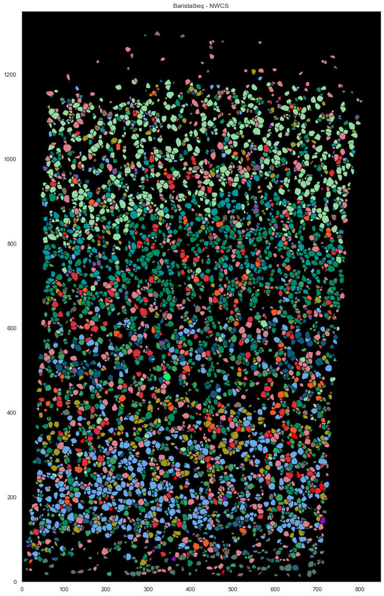
[84]:
from scipy.spatial import ConvexHull
plt.figure(figsize=[20, 20])
plt.gca().set_facecolor('black')
good_ids = cell_by_gene.index.astype(int)
i = 0
for cid, sdf in locations.groupby("cell"):
if cid in good_ids:
points = sdf.iloc[:, :2].to_numpy()
hull = ConvexHull(points)
plt.fill(points[hull.vertices, 0], points[hull.vertices, 1], cell_class_colors[calls_gmcs.subclass[i].replace("_", " ").replace("L23", "L2/3")], edgecolor="black", linewidth=0.5)
i += 1
plt.xlim([0, ds.shape[0]])
plt.ylim([0, ds.shape[1]])
plt.gca().set_aspect('equal', adjustable='box')
plt.title("BaristaSeq - GMCS")
[84]:
Text(0.5, 1.0, 'BaristaSeq - GMCS')
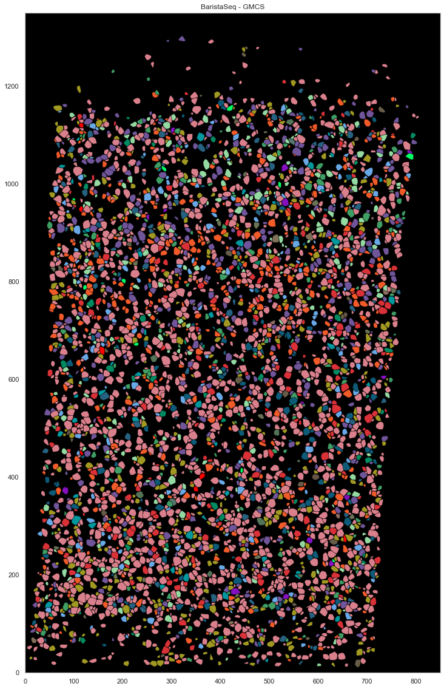